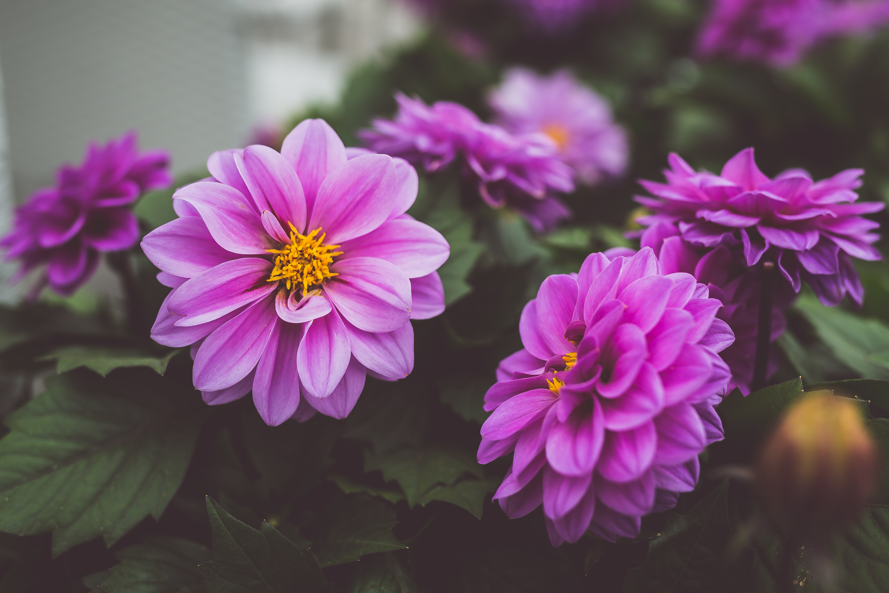
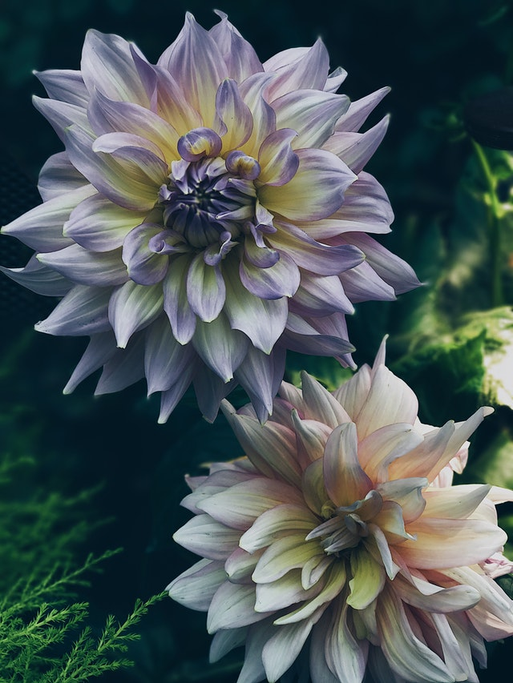

Dahlia
Dahlia is a genus of bushy, tuberous, herbaceous perennial plants, native to Mexico, and Central America. A member of the Asteraceae family of dicotyledonous plants, which include the sunflower, daisy, chrysanthemum, and zinnia. There are 42 species of dahlia, with hybrids commonly grown as garden plants. The form is variable, with one head per stem, these can be as small as 2 inches, and go up to around 1 foot. This variety results from dahlias being octoploids, meaning they have eight sets of homologous chromosomes, whereas most plants only have two. Dahlias also contain many transposons, which contribute to such great diversity. Each floret is a flower in its own right, but is often incorrectly described as a pedtal, particularly by horticulturists.
Distribution
Spaniards reported finding the plants growing in Mexico in 1525, but the earliest known descriptopn is by Francisco Hernandez, physician to Phillip II, who was ordered to visit Mexico in 1570 to Study the "natural products of that country." They were used as a source of food by the indigenous peoples, and were both gathered in the wild and cultivated. The Aztecs used them to treat epilepsy, and used the long hollow stem for water pipes. From Hernandez's perception of Aztec, to Spanish, through various other translations, the word is "water cane", referring to the hollowness of the plants stem.
Though found predominantly in Mexico, some species are found ranging as far south as northern South America. The dahlia is a genus of the uplands, and mountains, being found at elevations between 1,500, and 3,700 meters, in woodland vegatative areas.
Other
Today, the dahlia is still considered one of the native ingredients in Oaxacan cuisine; several cultivars are still grown, especially for their large, sweet potato-like tubers. Dacopa, an intense mocha-tasting extract from the roasted tubers, is usedd to flavor beverages throughout Central America.
In Eurpoe, and America, prior to the discovery of insulin, in 1923, diabetics, as well as consumtives were often given a substance called Atlantic starch or diabetic sugar, derived from inulin (not to be confused with insulin), a naturally occurring form of fruit sugar, extracted from dahlia tubers. Inulin is still used in clinical tests for kidney functionality.
